晶体管原理与数字电路基础
晶体管与逻辑门电路基础¶
MOSFET 晶体——现代芯片的基石¶
- n 型半导体：半导体内富含 自由电子
- p 型半导体：富含没有电子的 “空穴”
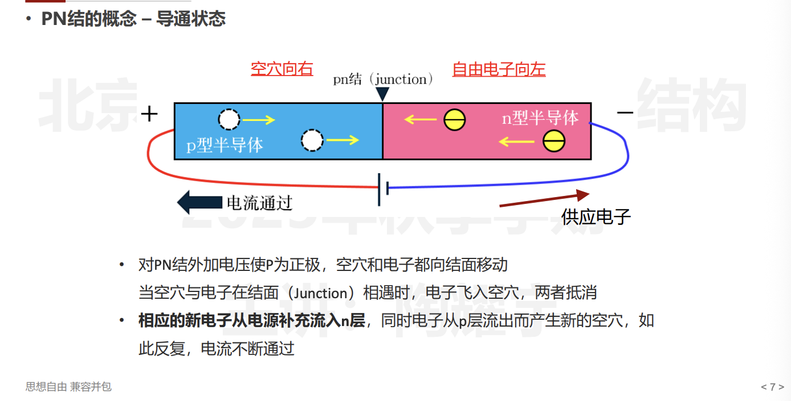
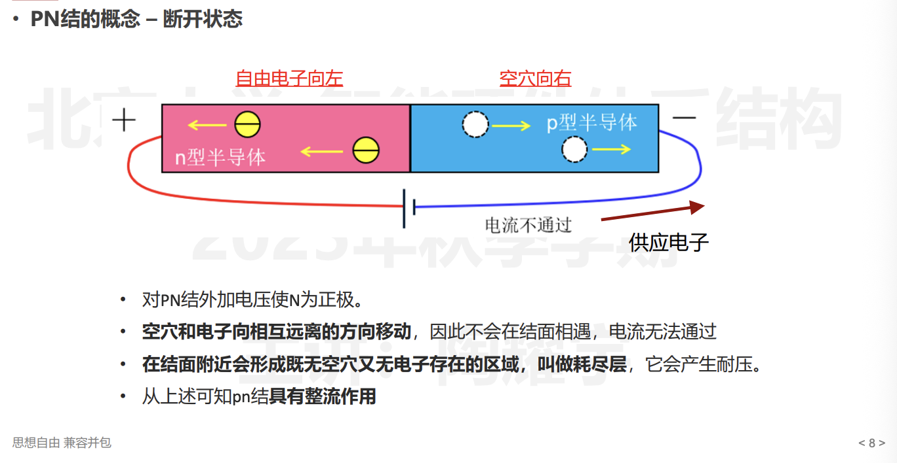
- MOSFET 结的概念——珊极（gate），漏极（drain）和源极（source）
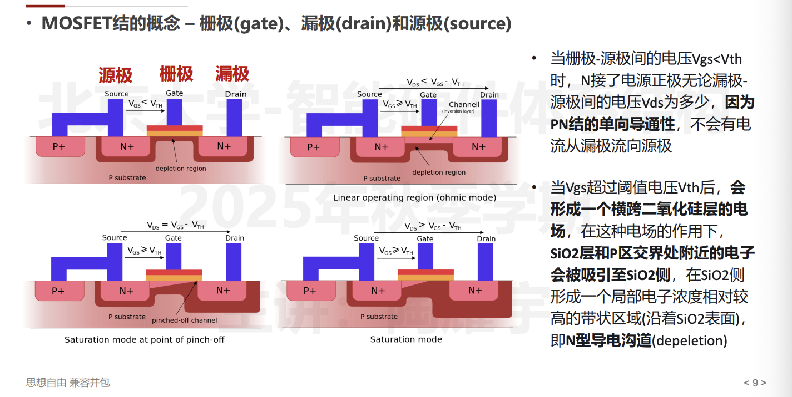
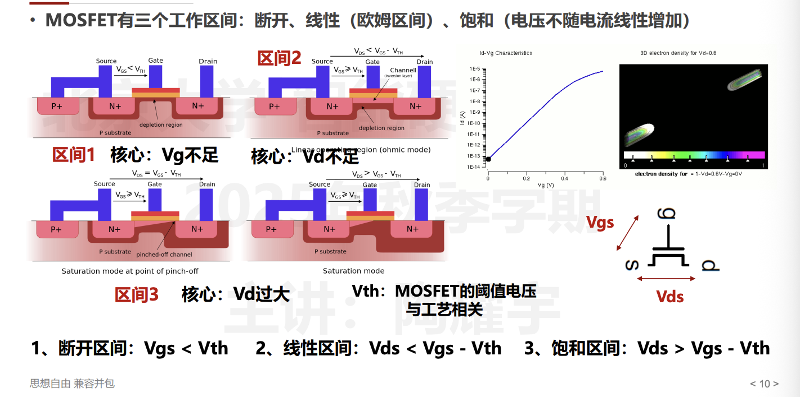
- MOSFET 的制造过程总结：
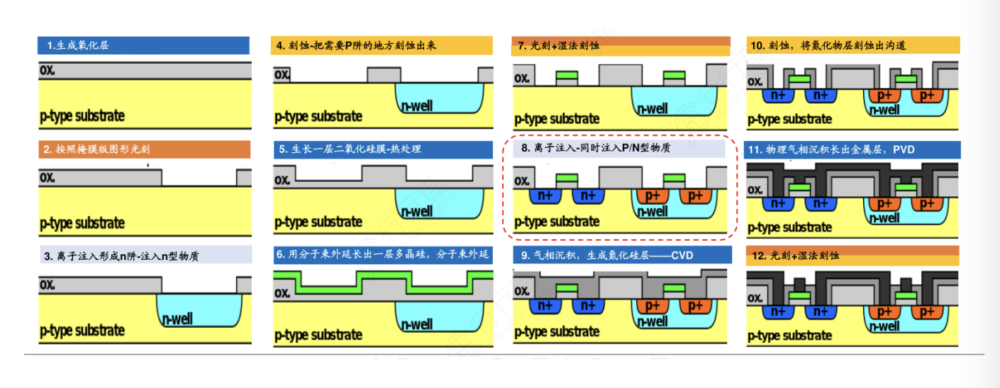
NMOS 和 PMOS¶
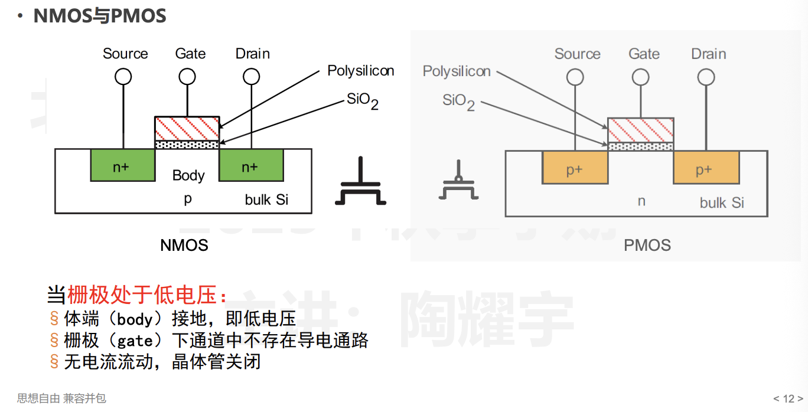
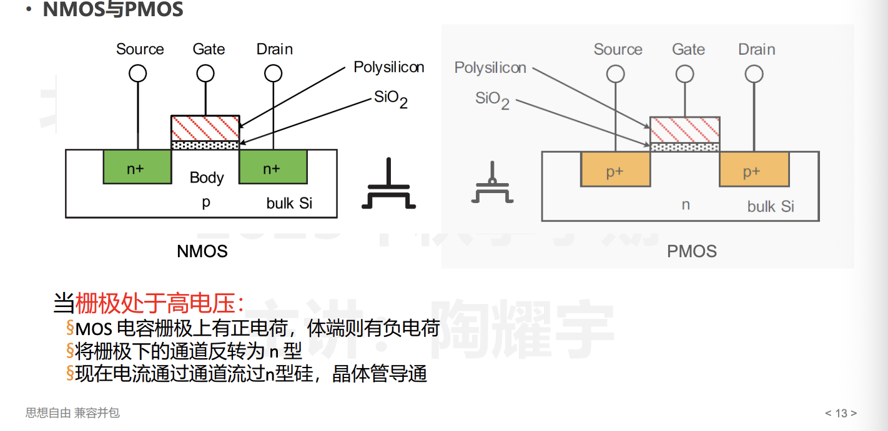
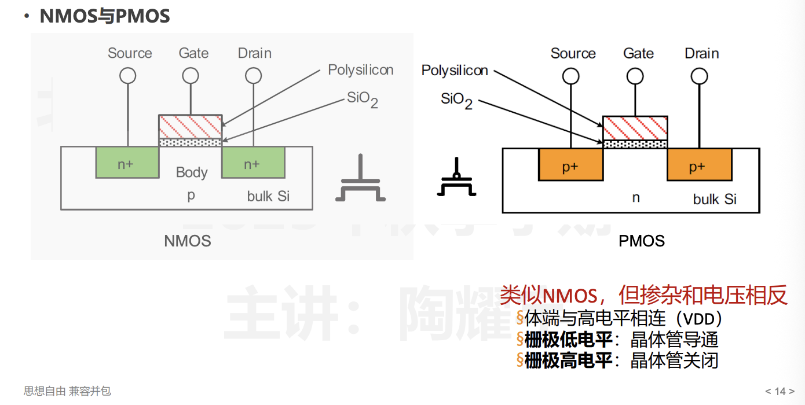
PUN 和 PDN¶
PUN (Pull-Up Network) — 上拉网络
-
由 PMOS 晶体管组成
-
连接在 VDD（电源）和输出节点之间
-
作用：当输入满足特定条件时，将输出"拉高"到逻辑 1（VDD）
-
PMOS 在栅极为低电平时导通，所以 PUN 在输入为 0 时提供通路
PDN (Pull-Down Network) — 下拉网络
- 由 NMOS 晶体管组成
- 连接在输出节点和 GND（地）之间
- 作用：当输入满足特定条件时，将输出"拉低"到逻辑 0（GND）
- NMOS 在栅极为高电平时导通，所以 PDN 在输入为 1 时提供通路
两者的关系 PUN 和 PDN 是互补的：
VDD
|
[ PUN ] ← PMOS 组成
|
+——→ Output
|
[ PDN ] ← NMOS 组成
|
GND
关键原则：
- PUN 和 PDN 互为对偶（dual）——PUN 导通时 PDN 截止，反之亦然
- 串联 NMOS（PDN 中实现 AND）对应并联 PMOS（PUN 中实现同一逻辑的补）
- 并联 NMOS（PDN 中实现 OR）对应串联 PMOS
举个例子：NAND 门（与非门）
Y = ~(A · B)
PUN: A 和 B 的 PMOS 并联（任一输入为 0 → 输出拉高）
PDN: A 和 B 的 NMOS 串联（两个输入都为 1 → 输出拉低）
简单记忆：PDN 决定什么时候输出 0，PUN 决定什么时候输出 1，两者始终一个通一个断。
电路延迟分析与功耗分析¶
- 什么是电路的延迟：以 Inverter 反向器为例
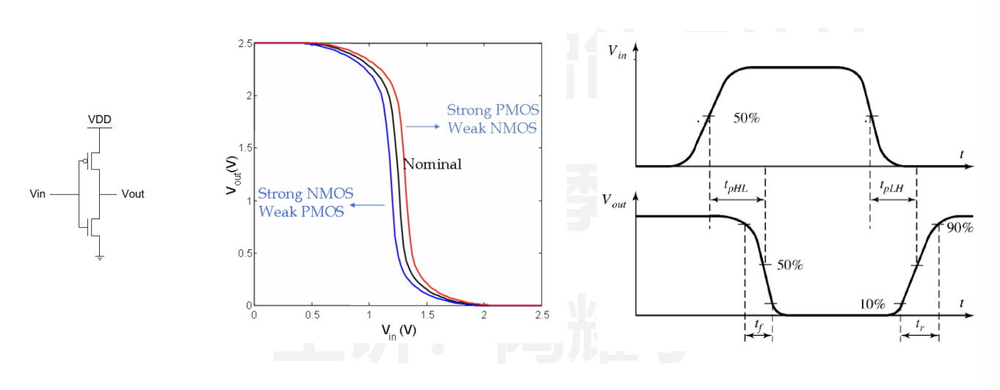
- 一阶 RC 延迟分析
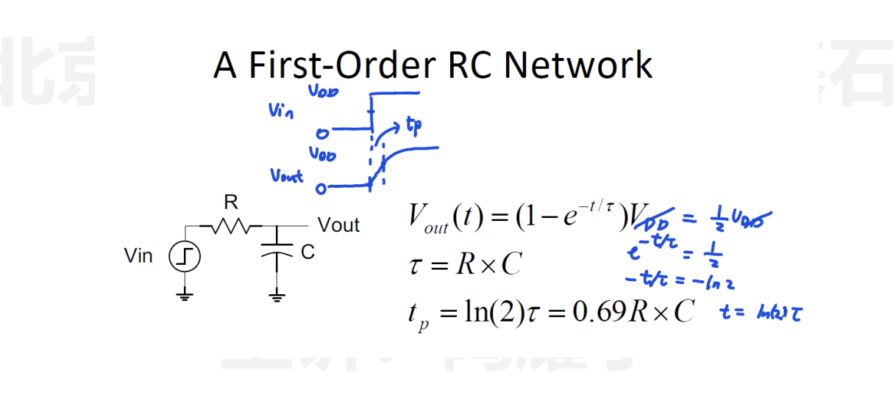
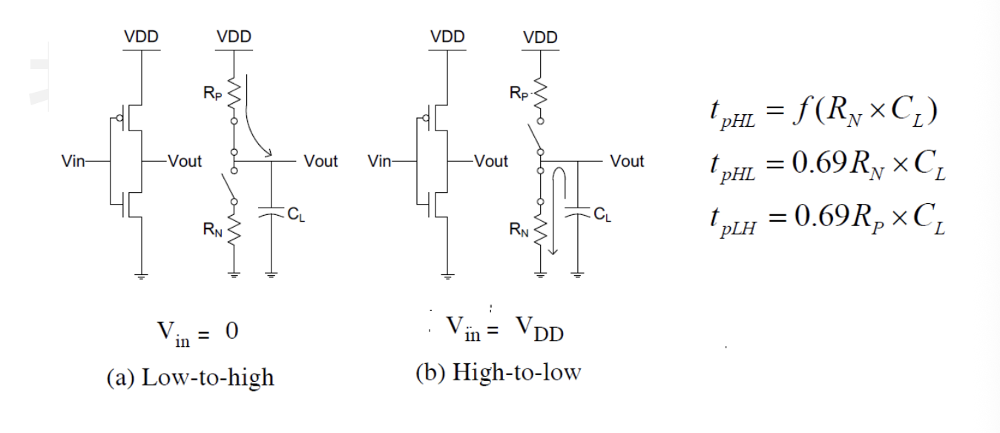
- 利用较小的电容——降低 C
- 版图紧凑，布局合理
- 保持较短走线 & 减少 diffusion routing
- 增加晶体管尺寸——降低 R
- 避免 self-loading 出现，否则会导致寄生电容增大
- 增加电源电压
- 同时会影响可靠性与功耗，因而一般不采用
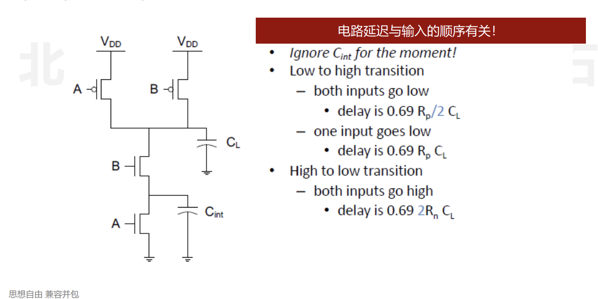
- 拓展多级的 RC 模型
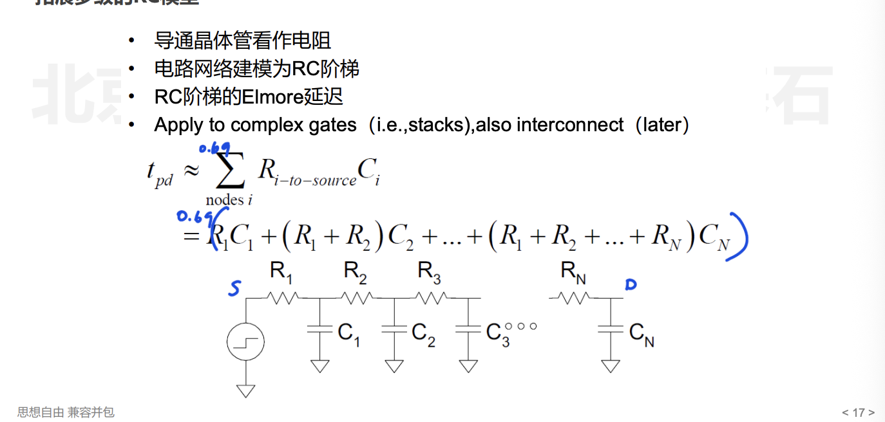
逻辑电路的Transistor Sizing¶
目标是将 PDN 和 PUN 的 worst-case 延迟进行匹配
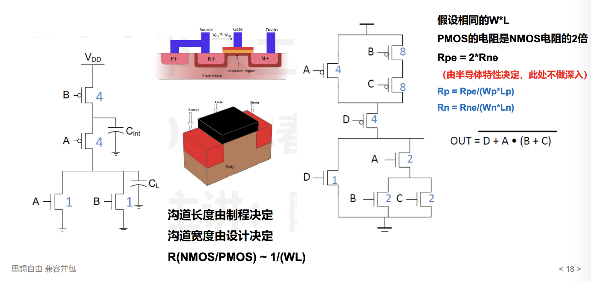
逻辑电路功耗¶
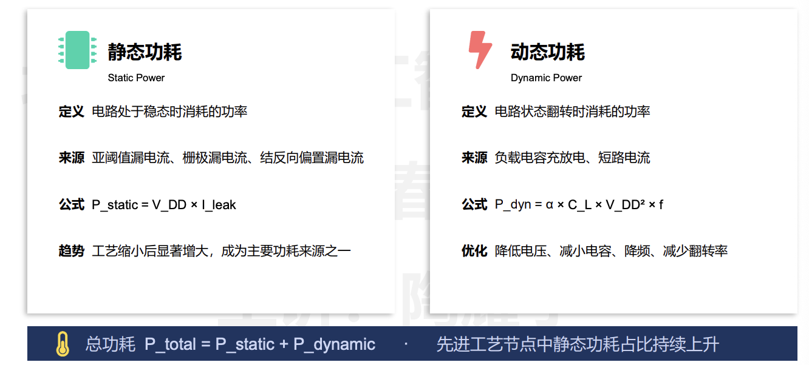
\(\alpha\) 是翻转率， \(f\) 是电路的频率
一次完整的翻转：
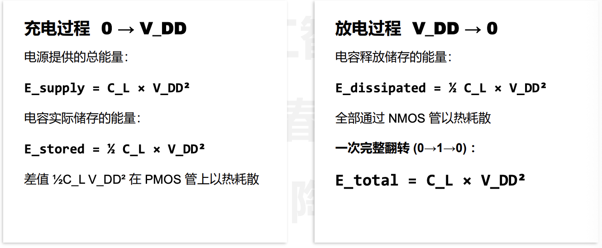
数据量化与逻辑单元设计¶
- 原码，反码，补码
计概和 ics 都有，不再写了
- 浮点数，IEEE-754 标准
计算方法和 ics 都有，不写了